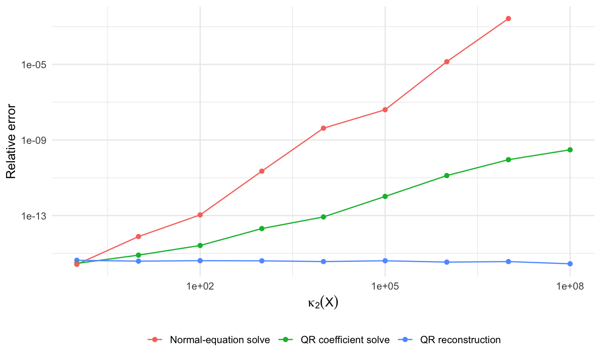
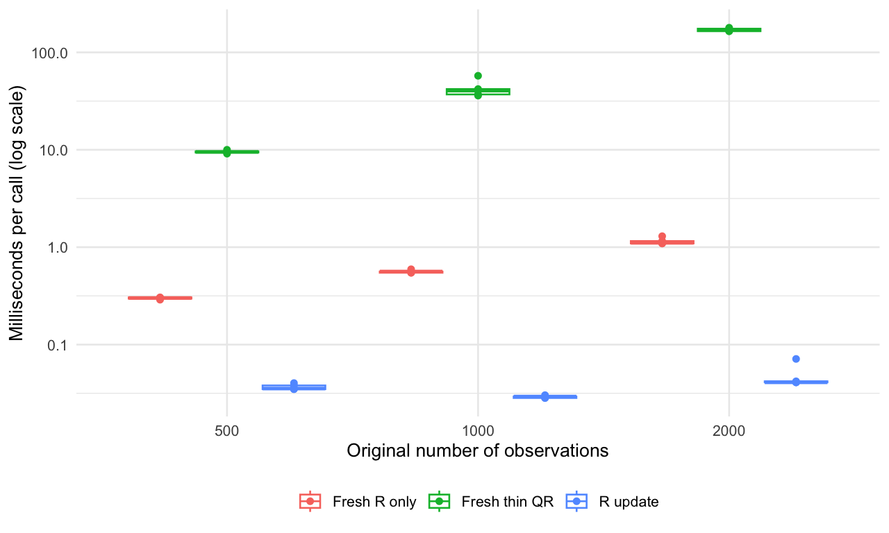
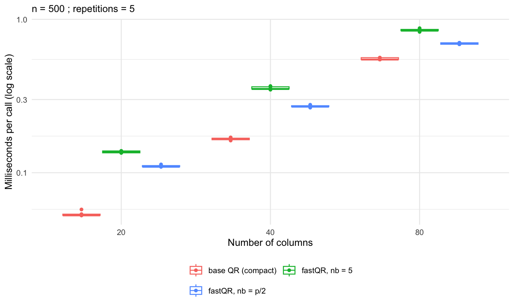
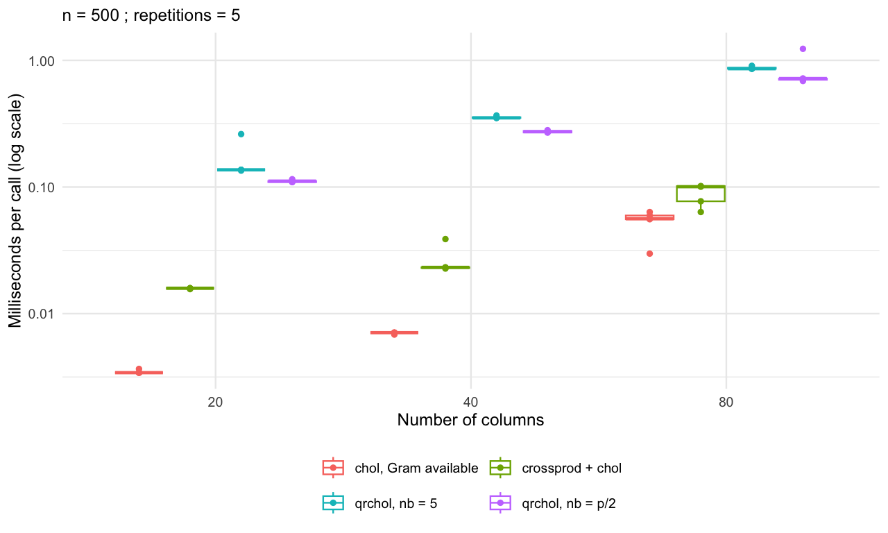
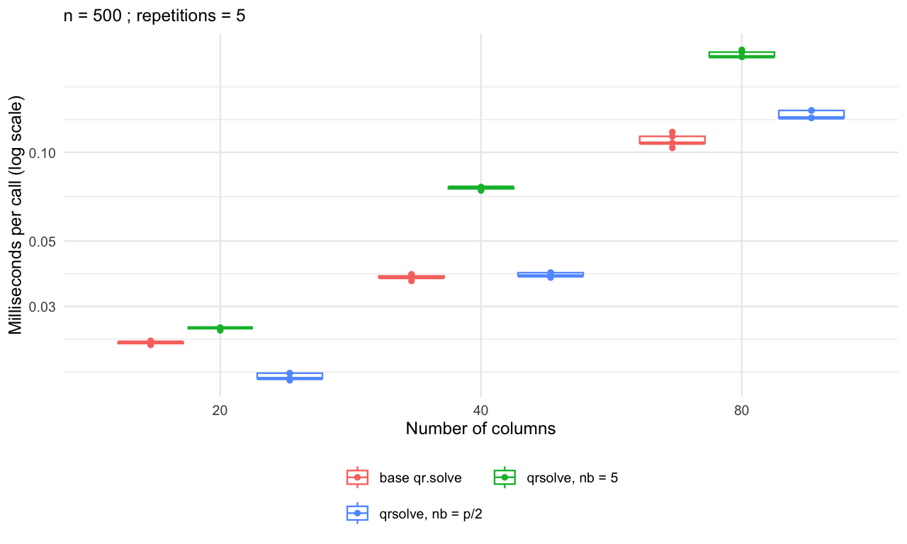

Numerical accuracy and reproducible timing
A useful comparison asks two questions: are the defining identities satisfied, and how much work is needed to obtain the required representation? Compact factors, explicit thin factors and full factors are different outputs and should not be pooled into a single speed ranking.
1 Accuracy as the condition number increases
We construct designs with prescribed singular values. The exact coefficient vector is known, and the response is formed without additional noise. Reconstruction error measures how accurately the factors represent the design; coefficient error measures the accuracy of a subsequent least-squares solve. These quantities can behave differently as conditioning deteriorates.
set.seed(2032)
n <- 160L
p <- 12L
U <- qr.Q(base::qr(matrix(rnorm(n * p), n, p)))
V <- qr.Q(base::qr(matrix(rnorm(p * p), p, p)))
beta <- seq(-1, 1, length.out = p)
condition_numbers <- 10^(0:8)
accuracy <- do.call(rbind, lapply(condition_numbers, function(kappa_target) {
singular_values <- exp(seq(0, -log(kappa_target), length.out = p))
X <- sweep(U, 2, singular_values, "*") %*% t(V)
y <- drop(X %*% beta)
f <- fastQR::qr(X, complete = FALSE)
b_qr <- backsolve(f$R, crossprod(f$Q, y))
b_normal <- tryCatch(solve(crossprod(X), crossprod(X, y)),
error = function(e) rep(NA_real_, p))
data.frame(condition = kappa_target,
reconstruction = norm(X - f$Q %*% f$R, "F") / norm(X, "F"),
QR_coefficients = sqrt(sum((b_qr - beta)^2) / sum(beta^2)),
normal_equations = sqrt(sum((b_normal - beta)^2) / sum(beta^2)))
}))
knitr::kable(accuracy, digits = 12)| condition | reconstruction | QR_coefficients | normal_equations |
|---|---|---|---|
| 1e+00 | 0 | 0.00e+00 | 0.000000e+00 |
| 1e+01 | 0 | 0.00e+00 | 0.000000e+00 |
| 1e+02 | 0 | 0.00e+00 | 0.000000e+00 |
| 1e+03 | 0 | 0.00e+00 | 2.200000e-11 |
| 1e+04 | 0 | 0.00e+00 | 4.211000e-09 |
| 1e+05 | 0 | 1.00e-12 | 3.986400e-08 |
| 1e+06 | 0 | 1.30e-11 | 1.390555e-05 |
| 1e+07 | 0 | 9.10e-11 | 2.664383e-03 |
| 1e+08 | 0 | 3.04e-10 | NA |
stopifnot(max(accuracy$reconstruction) < 1e-10)accuracy_long <- rbind(
data.frame(condition = accuracy$condition, error = accuracy$reconstruction, metric = "QR reconstruction"),
data.frame(condition = accuracy$condition, error = accuracy$QR_coefficients, metric = "QR coefficient solve"),
data.frame(condition = accuracy$condition, error = accuracy$normal_equations, metric = "Normal-equation solve"))
ggplot2::ggplot(accuracy_long, ggplot2::aes(condition, pmax(error, .Machine$double.eps), colour = metric)) +
ggplot2::geom_line(na.rm = TRUE) + ggplot2::geom_point(na.rm = TRUE) +
ggplot2::scale_x_log10() + ggplot2::scale_y_log10() +
ggplot2::labs(x = expression(kappa[2](X)), y = "Relative error", colour = NULL) +
ggplot2::theme_minimal(base_size = 12) + ggplot2::theme(legend.position = "bottom")
Relative reconstruction and coefficient errors versus the prescribed condition number. Missing normal-equation values indicate that the reference solver rejected the system as numerically singular.
Forming \(X^\top X\) squares the spectral condition number. A small QR reconstruction error does not imply that every downstream algorithm is equally stable. In particular, this comparison uses an explicit triangular QR solve and is not a stability claim about every regression wrapper in the package. Errors below machine epsilon are plotted at epsilon for readability.
2 Timing a row update against refactorization
We compare two ways to obtain a triangular factor for the same enlarged matrix: updating an existing \(R\), and computing a fresh thin QR factorization. The initial factorization is excluded from the update timing because this is the situation in which factors are already available. The fresh calculation also produces \(Q\); a separate rchol() comparison provides an R-only refactorization baseline.
We use three design sizes, ten new rows, five repetitions, warm-up calls and adaptively sized batches to reduce clock-resolution effects. Random-data generation, correctness checks and plotting are excluded from timed regions. The reported times are seconds per call, not elapsed time for an entire batch.
set.seed(2033)
repetitions <- 5L
sizes <- c(500L, 1000L, 2000L)
p <- 40L
m <- 10L
elapsed_per_call <- function(fun, batch_size) {
unname(system.time(for (i in seq_len(batch_size)) fun())["elapsed"]) / batch_size
}
timing <- do.call(rbind, lapply(sizes, function(n) {
X <- matrix(rnorm(n * p), n, p)
U <- matrix(rnorm(p * m), p, m)
X_new <- rbind(X, t(U))
R <- fastQR::qr(X, complete = FALSE)$R
methods <- list(
"R update" = function() fastQR::rupdate(X, R, U, type = "row", fast = FALSE),
"Fresh thin QR" = function() fastQR::qr(X_new, complete = FALSE),
"Fresh R only" = function() fastQR::rchol(X_new))
updated <- methods[[1]]()
gram_error <- norm(crossprod(updated) - crossprod(X_new), "F") / norm(crossprod(X_new), "F")
stopifnot(gram_error < 1e-10)
invisible(lapply(methods, function(fun) fun()))
batches <- vapply(methods, function(fun) {
b <- 1L
repeat {
elapsed <- unname(system.time(for (i in seq_len(b)) fun())["elapsed"])
if (elapsed >= .05 || b >= 4096L) break
b <- b * 2L
}
b
}, integer(1))
do.call(rbind, lapply(seq_len(repetitions), function(rep) {
# Randomize execution order within each repetition.
order <- sample(names(methods))
data.frame(n = n, p = p, added_rows = m, repetition = rep, method = order,
batch_calls = unname(batches[order]),
seconds = vapply(order, function(name)
elapsed_per_call(methods[[name]], batches[[name]]), numeric(1)))
}))
}))
timing_summary <- aggregate(seconds ~ n + method, timing, median)
knitr::kable(timing_summary, digits = 6,
col.names = c("Original rows", "Method", "Median seconds per call"))| Original rows | Method | Median seconds per call |
|---|---|---|
| 500 | Fresh R only | 0.000301 |
| 1000 | Fresh R only | 0.000562 |
| 2000 | Fresh R only | 0.001109 |
| 500 | Fresh thin QR | 0.009500 |
| 1000 | Fresh thin QR | 0.040500 |
| 2000 | Fresh thin QR | 0.169000 |
| 500 | R update | 0.000035 |
| 1000 | R update | 0.000029 |
| 2000 | R update | 0.000041 |
ggplot2::ggplot(timing, ggplot2::aes(factor(n), seconds * 1000, colour = method)) +
ggplot2::geom_boxplot(position = ggplot2::position_dodge(width = .8), outlier.shape = NA) +
ggplot2::geom_point(position = ggplot2::position_dodge(width = .8), size = 1.6) +
ggplot2::scale_y_log10() +
ggplot2::labs(x = "Original number of observations", y = "Milliseconds per call (log scale)", colour = NULL) +
ggplot2::theme_minimal(base_size = 12) + ggplot2::theme(legend.position = "bottom")
Measured time to obtain factors after adding ten observations. Initial factors are assumed available for the update. Points and boxes summarize five repetitions; each repetition averages a calibrated batch of calls.
At the largest row count in this run, updating the available factor takes a median of 0.041 milliseconds, compared with 1.11 milliseconds for R-only refactorization. This comparison applies to ten added rows and excludes the initial factorization from the update cost. The fresh thin-QR method also constructs \(Q\), so it answers a more demanding output request.
Timings depend on the machine, BLAS implementation, thread configuration and workload. A value printed as zero is below timer resolution and should not be interpreted as zero computational cost; increase the calibration duration if this occurs. These results illustrate this workload and do not establish a universal speed ranking. The code deliberately keeps input checking enabled.
3 Comparing QR interfaces
This comparison retains the five interfaces of the original benchmark: base::qr, fastQR::qr, fastQR::qr_fast with and without pivoting, and Matrix::qr. These calls return different representations: the timings compare the named interfaces, not identical output objects. The Matrix call below receives an ordinary dense R matrix, as in the original example; it is not a sparse-QR benchmark. Pivoting also performs additional work.
The default settings keep rebuilding this guide practical. Set options(fastQR.guide.full_benchmarks = TRUE) before source("build.R") to use the original large dimension grid and twenty repetitions in the scaling experiments. All displayed tables are generated from the actual settings, without loading historical timing files.
full_benchmarks <- isTRUE(getOption("fastQR.guide.full_benchmarks", FALSE))
benchmark_reps <- if (full_benchmarks) 20L else 5L
benchmark_n <- if (full_benchmarks) 2000L else 500L
benchmark_p <- if (full_benchmarks) c(20L,40L,100L,200L,400L,800L,1200L,1500L,1800L) else c(20L,40L,80L)
measure_methods <- function(methods, repetitions) {
invisible(lapply(methods, function(f) f()))
batches <- vapply(methods, function(f) {
b <- 1L
repeat {
seconds <- unname(system.time(for (i in seq_len(b)) f())["elapsed"])
if (seconds >= .05 || b >= 4096L) break
b <- b * 2L
}
b
}, integer(1))
do.call(rbind, lapply(seq_len(repetitions), function(rep) {
order <- sample(names(methods))
data.frame(repetition = rep, method = order, batch_calls = unname(batches[order]),
seconds = vapply(order, function(k) elapsed_per_call(methods[[k]], batches[[k]]), numeric(1)))
}))
}
set.seed(2041)
interface_n <- if (full_benchmarks) 1000L else 300L
interface_p <- if (full_benchmarks) 500L else 60L
interface_reps <- if (full_benchmarks) 10L else 5L
X_interface <- matrix(rnorm(interface_n * interface_p, 1), interface_n, interface_p)
interface_methods <- list(
"base::qr (compact)" = function() base::qr(X_interface),
"fastQR::qr (thin)" = function() fastQR::qr(X_interface, nb = 5, complete = FALSE),
"qr_fast, no pivot" = function() fastQR::qr_fast(X_interface, pivot = FALSE),
"qr_fast, pivot" = function() fastQR::qr_fast(X_interface, pivot = TRUE),
"Matrix::qr (dense input)" = function() Matrix::qr(X_interface))
interface_timing <- measure_methods(interface_methods, interface_reps)
knitr::kable(aggregate(seconds ~ method, interface_timing, median), digits = 6,
caption = sprintf("Median seconds per call: n = %d, p = %d, repetitions = %d.",
interface_n, interface_p, interface_reps))| method | seconds |
|---|---|
| Matrix::qr (dense input) | 0.000191 |
| base::qr (compact) | 0.000189 |
| fastQR::qr (thin) | 0.000328 |
| qr_fast, no pivot | 0.000164 |
| qr_fast, pivot | 0.000156 |
In this run, the smallest median time in the interface table belongs to qr_fast, pivot. This is a comparison of calls with different outputs: forming explicit thin factors includes work that a compact representation defers. Pivoting can change the algorithm and its cost; a small observed timing difference is not evidence that pivoting is intrinsically free or beneficial.
4 QR, Cholesky and linear-system scaling benchmarks
We retain both block-size choices, \(5\) and \(p/2\), and the three workloads from the original vignette. Within each dimension, every method receives the same data. Input generation, validation and plotting are excluded from the timings; execution order is randomized within each repetition, and calls are batched to reduce clock-resolution effects. Repetitions measure timing variability on a fixed matrix, rather than variation across independently generated problems.
- QR decomposition:
fastQR::qrreturns explicit thin factors, whereasbase::qrreturns compact factors. The different outputs must be considered when interpreting execution times. - Triangular factor:
qrchol(X)is compared with bothchol(crossprod(X)), which includes forming the Gram matrix, andchol(G)with \(G=X^\top X\) already available. Keeping both baselines makes the cost of forming \(G\) explicit. - Linear-system solution: both solvers receive the same precomputed \(G=X^\top X\) and \(h=X^\top y\). Thus neither method is charged for forming these inputs. This reproduces the original normal-equation workload; it is not a comparison of direct least-squares solvers acting on \(X\).
set.seed(2042)
benchmark_validation <- list()
scaling_timing <- do.call(rbind, lapply(benchmark_p, function(p) {
n <- benchmark_n
X <- matrix(rnorm(n * p), n, p)
y <- rnorm(n)
G <- crossprod(X); h <- crossprod(X, y)
block <- max(1L, p %/% 2L)
b_reference <- base::qr.solve(G, h)
errors <- numeric()
for (nb in c(5L, block)) {
f <- fastQR::qr(X, nb = nb, complete = FALSE)
U <- fastQR::qrchol(X, nb = nb)
b <- fastQR::qrsolve(A = G, b = h, nb = nb)
errors <- c(errors, norm(X - f$Q %*% f$R, "F") / norm(X, "F"),
norm(crossprod(U) - G, "F") / norm(G, "F"),
sqrt(sum((b - b_reference)^2)) / max(1, sqrt(sum(b_reference^2))))
}
stopifnot(max(errors) < 1e-8)
benchmark_validation[[as.character(p)]] <<- data.frame(p = p, max_relative_error = max(errors))
workloads <- list(
QR = list("fastQR, nb = 5" = function() fastQR::qr(X, nb = 5, complete = FALSE),
"fastQR, nb = p/2" = function() fastQR::qr(X, nb = block, complete = FALSE),
"base QR (compact)" = function() base::qr(X)),
Cholesky = list("qrchol, nb = 5" = function() fastQR::qrchol(X, nb = 5),
"qrchol, nb = p/2" = function() fastQR::qrchol(X, nb = block),
"chol, Gram available" = function() base::chol(G),
"crossprod + chol" = function() base::chol(crossprod(X))),
Solve = list("qrsolve, nb = 5" = function() fastQR::qrsolve(G, h, nb = 5),
"qrsolve, nb = p/2" = function() fastQR::qrsolve(G, h, nb = block),
"base qr.solve" = function() base::qr.solve(G, h)))
do.call(rbind, lapply(names(workloads), function(workload) {
out <- measure_methods(workloads[[workload]], benchmark_reps)
out$workload <- workload; out$n <- n; out$p <- p
out
}))
}))
benchmark_validation <- do.call(rbind, benchmark_validation)
knitr::kable(benchmark_validation, digits = 12,
caption = "Largest relative validation error across the two block sizes and three workloads.")| p | max_relative_error | |
|---|---|---|
| 20 | 20 | 0 |
| 40 | 40 | 0 |
| 80 | 80 | 0 |
knitr::kable(aggregate(seconds ~ workload + n + p + method, scaling_timing, median), digits = 6,
caption = "Median seconds per call; dimensions and method names are reported explicitly.")| workload | n | p | method | seconds |
|---|---|---|---|---|
| QR | 500 | 20 | base QR (compact) | 0.000053 |
| QR | 500 | 40 | base QR (compact) | 0.000166 |
| QR | 500 | 80 | base QR (compact) | 0.000547 |
| Solve | 500 | 20 | base qr.solve | 0.000023 |
| Solve | 500 | 40 | base qr.solve | 0.000038 |
| Solve | 500 | 80 | base qr.solve | 0.000107 |
| Cholesky | 500 | 20 | chol, Gram available | 0.000003 |
| Cholesky | 500 | 40 | chol, Gram available | 0.000007 |
| Cholesky | 500 | 80 | chol, Gram available | 0.000056 |
| Cholesky | 500 | 20 | crossprod + chol | 0.000016 |
| Cholesky | 500 | 40 | crossprod + chol | 0.000023 |
| Cholesky | 500 | 80 | crossprod + chol | 0.000101 |
| QR | 500 | 20 | fastQR, nb = 5 | 0.000137 |
| QR | 500 | 40 | fastQR, nb = 5 | 0.000352 |
| QR | 500 | 80 | fastQR, nb = 5 | 0.000844 |
| QR | 500 | 20 | fastQR, nb = p/2 | 0.000109 |
| QR | 500 | 40 | fastQR, nb = p/2 | 0.000270 |
| QR | 500 | 80 | fastQR, nb = p/2 | 0.000695 |
| Cholesky | 500 | 20 | qrchol, nb = 5 | 0.000137 |
| Cholesky | 500 | 40 | qrchol, nb = 5 | 0.000352 |
| Cholesky | 500 | 80 | qrchol, nb = 5 | 0.000859 |
| Cholesky | 500 | 20 | qrchol, nb = p/2 | 0.000111 |
| Cholesky | 500 | 40 | qrchol, nb = p/2 | 0.000273 |
| Cholesky | 500 | 80 | qrchol, nb = p/2 | 0.000719 |
| Solve | 500 | 20 | qrsolve, nb = 5 | 0.000025 |
| Solve | 500 | 40 | qrsolve, nb = 5 | 0.000076 |
| Solve | 500 | 80 | qrsolve, nb = 5 | 0.000211 |
| Solve | 500 | 20 | qrsolve, nb = p/2 | 0.000017 |
| Solve | 500 | 40 | qrsolve, nb = p/2 | 0.000038 |
| Solve | 500 | 80 | qrsolve, nb = p/2 | 0.000131 |
benchmark_plot <- function(workload_name) {
dat <- subset(scaling_timing, workload == workload_name)
ggplot2::ggplot(dat, ggplot2::aes(factor(p), seconds * 1000, colour = method)) +
ggplot2::geom_boxplot(outlier.shape = NA, position = ggplot2::position_dodge(.8)) +
ggplot2::geom_point(size = 1.3, position = ggplot2::position_dodge(.8)) +
ggplot2::scale_y_log10() +
ggplot2::labs(x = "Number of columns", y = "Milliseconds per call (log scale)", colour = NULL,
subtitle = paste("n =", benchmark_n, "; repetitions =", benchmark_reps)) +
ggplot2::theme_minimal(base_size = 11) +
ggplot2::theme(legend.position = "bottom") +
ggplot2::guides(colour = ggplot2::guide_legend(nrow = 2, byrow = TRUE))
}benchmark_plot("QR")
QR interface timings across column dimensions. Compact and explicit outputs are distinguished in the legend.
At the largest tested dimension (p = 80), the smallest median time is 0.547 milliseconds per call for base QR (compact). Changing the block size changes the balance between panel factorization and matrix operations, so the preferred choice can depend on matrix dimensions and the linear-algebra library. The compact base-R result and explicit fastQR factors remain different deliverables.
benchmark_plot("Cholesky")
Triangular-factor timings, with separate baselines for an available Gram matrix and for its formation from X.
At the largest tested dimension (p = 80), the smallest median time is 0.0562 milliseconds per call for chol, Gram available. The two Cholesky baselines separate factorization from the cost of forming the Gram matrix. Compare qrchol with crossprod + chol when starting from the design alone; chol, Gram available is relevant when that matrix has already been computed. Their numerical-stability implications also differ because explicitly forming the Gram matrix squares the condition number.
benchmark_plot("Solve")
Solution times for the same precomputed normal-equation system.
At the largest tested dimension (p = 80), the smallest median time is 0.107 milliseconds per call for base qr.solve. Both solvers start from the same precomputed normal-equation system. The differences therefore concern the solution stage, not preprocessing or prediction. The validation table checks agreement separately from execution time; a faster call would not be useful if it failed that check.
The normal-equation workload squares the condition number of the design, as discussed above. Good agreement on these random examples does not remove that limitation. The supplied large-grid option can be computationally expensive; the small default run supplies reproducible examples, not evidence of performance at untested dimensions. No historical cached measurements are mixed with these newly computed results.
5 Record the computational environment
packageVersion("fastQR")## [1] '1.1.5'Sys.info()[c("sysname", "release", "machine")]## sysname release machine
## "Darwin" "23.3.0" "arm64"Sys.getenv(c("OMP_NUM_THREADS", "OPENBLAS_NUM_THREADS", "VECLIB_MAXIMUM_THREADS"))## OMP_NUM_THREADS OPENBLAS_NUM_THREADS VECLIB_MAXIMUM_THREADS
## "" "" ""sessionInfo()## R version 4.5.2 (2025-10-31)
## Platform: aarch64-apple-darwin20
## Running under: macOS Sonoma 14.3
##
## Matrix products: default
## BLAS: /System/Library/Frameworks/Accelerate.framework/Versions/A/Frameworks/vecLib.framework/Versions/A/libBLAS.dylib
## LAPACK: /Library/Frameworks/R.framework/Versions/4.5-arm64/Resources/lib/libRlapack.dylib; LAPACK version 3.12.1
##
## locale:
## [1] C
##
## time zone: Europe/Rome
## tzcode source: internal
##
## attached base packages:
## [1] stats graphics grDevices utils datasets methods base
##
## loaded via a namespace (and not attached):
## [1] Matrix_1.7-4 jsonlite_2.0.0 gtable_0.3.6 fastQR_1.1.5
## [5] dplyr_1.2.0 compiler_4.5.2 tidyselect_1.2.1 Rcpp_1.1.1
## [9] xml2_1.5.2 jquerylib_0.1.4 scales_1.4.0 yaml_2.3.12
## [13] fastmap_1.2.0 lattice_0.22-9 ggplot2_4.0.3 R6_2.6.1
## [17] labeling_0.4.3 generics_0.1.4 RcppEigen_0.3.4.0.2 knitr_1.51
## [21] rbibutils_2.4.1 tibble_3.3.1 bslib_0.10.0 pillar_1.11.1
## [25] RColorBrewer_1.1-3 rlang_1.2.0 cachem_1.1.0 xfun_0.56
## [29] sass_0.4.10 S7_0.2.2 otel_0.2.0 cli_3.6.6
## [33] withr_3.0.2 magrittr_2.0.4 Rdpack_2.6.6 digest_0.6.39
## [37] grid_4.5.2 lifecycle_1.0.5 vctrs_0.7.3 evaluate_1.0.5
## [41] glue_1.8.1 farver_2.1.2 rmarkdown_2.30 tools_4.5.2
## [45] pkgconfig_2.0.3 htmltools_0.5.9